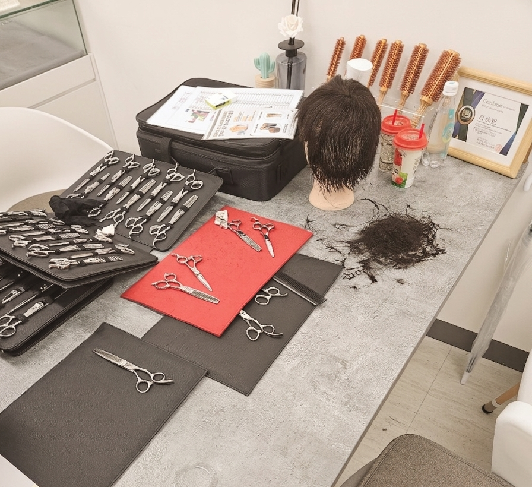

01 / 03
방문딜러가 제품이 좋다고 권합니다
방문딜러가 새로 살때가 되었다 합니다
높은 금액이니 오래 쓸 수 있다 말합니다
사용중 불편하면 딜러에게 연락합니다
프레임을 벗어날 '비교' 를 권합니다
그 고객에게 좋은가위의 기준은 어떻게될까요?
좋은 가격과 좋은 가위의 기준은요?
온전히 판매자의 흐름 안에서 기준이 생기게 됩니다
비교하세요
고객을 위하는 브랜드만이 나아갈 것입니다
권하지 않습니다
올바른 선택을 돕습니다

상담 진행방식
MAMORU CONSULTING
현재 가위업계 문제점, 마모루의 한마디
방문딜러가 제품이 좋다고 권합니다
방문딜러가 새로 살때가 되었다 합니다
높은 금액이니 오래 쓸 수 있다 말합니다
사용중 불편하면 딜러에게 연락합니다
그 고객에게 좋은가위의 기준은 어떻게될까요?
좋은 가격과 좋은 가위의 기준은요?
온전히 판매자의 흐름 안에서 기준이 생기게 됩니다
비교하세요
고객을 위하는 브랜드만이 나아갈 것입니다
너무나도 자연스러운 가위 할부
매출을 늘리려 가위를 써야하는데
부담이 너무 큽니다
다들 그렇게 사는데 어쩌겠어요
골프와같이 취미를 위한 구매라면 이해합니다
미용은 고객님들께 방향이자 직업입니다
상황에, 지갑에 맞추어 구매해야합니다
즐길수있는 미용가위가격을 보이겠습니다
재질, 형태, 디자인 ..
인터넷을 검색해봐도
미용가위의 비싼 이유만 있습니다
결국, 고객은 자주보이는 딜러만 찾게됩니다
필요한 상황에 필요한 구매인가?
커트스타일, 환경, 습관에 적당한가?
내 경력에도 안전한 구매인가?
가격 부담이 없는가?
이 모든것을 책임지겠습니다
마모루상담의 가치를 경험하세요

상담철칙
제품을 보이기보다, 고객을 살피겠습니다
좋은 가위의 기준은 고객을 파악해야 알 수 있기에
불필요한 구매가 없도록
기존 가위의 단순한 불편으로 인한 구매는 복원수리라는 안전장치가 있습니다
눈앞의 매출보다, 고객님의 믿을 구석이 되고 싶습니다
고객님께 맞는 제품이 없다면,
타사의 상담과 제품을 알아보시길 말씀드립니다
당장의 판매보다, 만족할 수 있는 구매를 지향합니다
많은 고객이 선택할 수 있는 넓은 폭을 구축하겠습니다
CUT THE FAKE,
KEEP THE REAL

정품 마모루 가위는 할인적용되어 복원수리 진행
복원수리 안내 →내일 바로 수거
2~3일이면 다시 손에
매장방문 당일수리도 OK
스타일이 바뀌면
가위도 맞춤으로
날 변형 가공도 할인적용
상술 간파 · 불필요한 지출 예방 · 나에게 맞는 가위 고르는 법
비교하셔도 됩니다
아니, 비교해주세요
고객을 위한 마음,
누구보다 자신있습니다

고객님이 날짜와 시간을 달력에서 체크하여
방문해주시는 방법입니다
달력에서 희망 일정을 선택하여 접수합니다
가위 테스트는 물론,
고객님께 딱 맞는 가위를 안내드립니다
당일예약은 불가합니다
상담시간은 1시간 기준입니다
상담인원이 2명 이상일 경우 접수 시 메모에 작성해주세요
사용중이신 가위를 챙기신다면
무상점검 및 꿀팁을 진행&제공해드립니다

마모루가 고객님께 방문합니다
희망 일정과 주소를 입력해주세요
알림톡으로 방문 일정을 안내드립니다
알림톡에서 시간 재조율 요청이 가능합니다
버튼 눌러 일정 조율고객님 매장에서 직접 상담을 진행합니다
상담시간은 1시간 기준입니다
인원이 2명 이상일 경우 접수 메모란에 적어주세요
상담접수가 몰리는 경우 일정제안 알림톡이 지연될 수 있습니다
사용중이신 가위를 챙기신다면
무상점검 및 꿀팁을 진행&제공해드립니다
카카오톡 상담채널로 진행됩니다
스타일과 사용습관을 진단해주세요
진단 결과와 함께 상담을 접수합니다
카카오톡으로 맞춤 안내를 드립니다
톡상담 진행 전 페이지 내 간편진단으로 스타일과 사용습관을 진단해주세요 (상담사에게 전달됩니다)
상담 전 주로 쓰는 메인가위의 사진을 찍어주시면 상담 시 도움이 될 수 있습니다
기존 사용중인 가위의 불편으로 인한 상담일 경우, 해당 가위의 전면 사진 · 날 벌린 사진 각 한 장씩 찍어 준비해주세요
간편진단을 먼저 진행하시면
상담사가 고객님의 스타일을 미리 파악하여 더 정확한 안내가 가능합니다
상담 예약에 비용은 얼마인가요?
무료입니다 현재 어느 회사던 무료이니 타사와 비교를 해보시는것도 추천드립니다
수도권이 아닌데 출장 상담 접수하면 얼마 후에 방문주시나요?
보통 1~2주 이내로 방문드리지만 지역에 따라 출장제안 일정이 늦어질 수 있습니다
가장 빠른 상담방법은 어떻게 될까요?
톡상담 → 매장방문 → 출장상담 순으로 상담이 수월합니다
가위상담 시 가위 복원수리도 맡길 수 있나요?
가능합니다